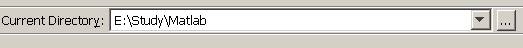
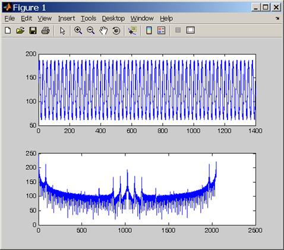

Matlab编程实 例
程序的功能：对波形数据进行FFT计算，并绘制波形。本实例需要安装Matlab工具。
1. 在自定义目录下创建WaveData.m文件。
2. 创建设备。第一个参数为销售商参数，可以为agilent、NI或tek，第二个参数为资源描述符。创建后需要设置设备的属性，本例中设置输入缓存的长度为2048。
mso4000 = visa( 'ni','USB0::0x1AB1::0x04B1::DS4C0000000001::INSTR' );
mso4000.InputBufferSize = 2048;
3. 打开设备。
fopen( mso4000 );
4. 请求数据。
fprintf(mso4000,
':wav:data?' );[data,len]= fread( mso4000, 2048 );
5. 关闭设备。
fclose( mso4000 );
delete(mso4000);
clear mso4000;
6. 数据处理。读取的波形数据含有TMC头，对于MSO4000/DS4000/DS6000其长度为11个字节，其中前2个字节分别为TMC头标志符#和宽度描述符9，接着的9个字节为数据长度，然后是波形数 据，最后一个字节为结束符0x0A。所以，读取的有效波形数据点为12到倒数第2个点。
wave = data(12:len-1);
wave = wave';
subplot(211);
plot( wave );
fftSpec = fft( wave', 2048 );
fftRms = abs( fftSpec' );
fftLg = 20*log(fftRms );
subplot(212);
plot(fftLg);
7. 运行程序。确定当前的目录设置能够搜索到WaveData.m文件，在Command Window窗口输入WaveData，按Enter键即可 。如下列图所示：

波形图
